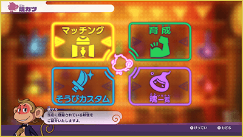
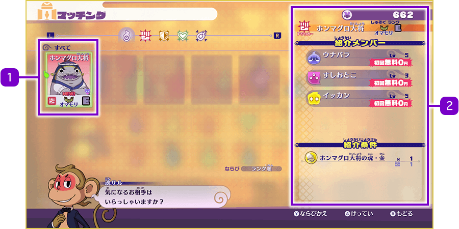
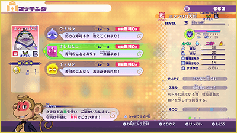
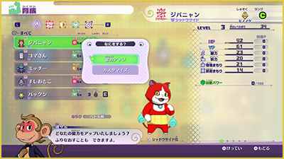
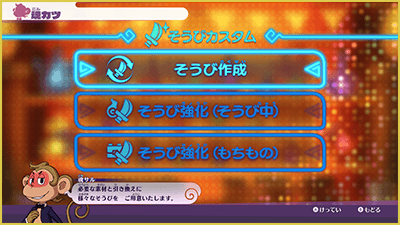

Almas
Ir a la Agencia de Almas
Ve a la "Agencia de Almas" en ExpendeLand y habla con Espirimate para acceder a un menú con 4 opciones, o entra directamente desde la aplicación "Almas" de tu Yo-kai Pad.

Tipos de Almas
Para usar los menús de Espirimate necesitas "Almas", las cuales obtienes mediante Extracción de Almas o la Expendekai.
Tienen 3 niveles de rareza: Oro > Rojo > Blanco.
Para entrenar a un Yo-kai o crear / mejorar equipo, también se requieren almas especiales como "Almas de Tribu", "Almas de Jefe" o otras almas especiales, obtenidas al ganar combates o en cofres.
※ En algunos casos también se necesitan objetos como material.
Emparejamiento
Te permite conseguir nuevos amigos Yo-kai utilizando tus almas.
Elige al Yo-kai que quieras y pulsa Ⓐ para confirmar.

- 1Lista de candidatos
-
Se añaden automáticamente al conseguir almas por extracción o en la Expendekai.
- 2Información del Yo-kai
-
Muestra su rol, nombre, tribu y rango. Si ya es tu amigo, aparecerá un icono especial. Abajo verás a los "Miembros posibles" y los requisitos (almas necesarias, etc...).
Pasos para el Emparejamiento
Selecciona a un miembro posible. Según tu elección, cambiarán el nivel, las estadísticas y la personalidad del Yo-kai. Tras confirmar, usarás las almas y los objetos necesarios para entablar amistad con dicho Yo-kai.

Entrenamiento
Consume Almas de Tribu y objetos para liberar el potencial de tus Yo-kai y mejorar sus parámetros. Selecciona un Yo-kai, elige "Aumento de capacidades" y escoge la estadística que quieras subir.

Límite de parámetros
El aumento de parámetros tiene un límite. Cuando el "Poder Extra" alcanza 100, no se puede liberar más potencial. Selecciona "Personalizar" si deseas redistribuir los puntos asignados.
Personalizar equipamiento
Permite crear nuevo equipamiento o mejorar el que ya tienes consumiendo almas y los objetos correspondientes.

Lista de Almas
Muestra todas tus almas. Si tienes varias iguales, selecciona "Combinar almas" para canjearlas por una de rareza superior. También puedes elegir "Descomponer almas" para obtener Almas de Tribu de la misma categoría.